Etudiant de deuxième année en BUT Réseaux et
Télécommunications
A propos de moi
Je suis Baptiste FERRAND, étudiant en deuxième année de Bachelor Universitaire de Technologie en Réseaux et Télécommunications à l'université de Clermont-Ferrand. J'ai validé ma première année.
Je suis attiré par les Réseaux et Télécommunications. Ce domaine me permet d'explorer différents secteurs tels que les télécommunications, la cybersécurité, la gestion de réseaux et la programmation. Avec la possibilité de contribuer à des projets toujours plus innovants et de travailler sur des technologies de pointe. De plus, les réseaux et les télécommunications sont au cœur de l'innovation technologique.
Je suis une personne curieuse, autonome, rigoureux et j'ai la capacité à travailler en équipe. Ces qualités constituent un ensemble de compétences précieuses pour surmonter les défis et atteindre des objectifs ambitieux. Que ce soit dans le domaine professionnel ou personnel.
Je suis en alternance chez SPIE ICS, une entreprise spécialisée dans le numérique, pour une durée de 2 ans sur le rythme de 1 mois / 1 mois.
Formations
-
2023 - 2026 :
BUT Réseaux et Télécommunications (63) : Deuxième
année à l'IUT Clermont Auvergne dans un cursus en trois ans.
Formation généraliste dans le domaine des Réseaux et
Télécommunications, spécialisée dans la cybersécurité. Deuxième
année en alternance chez SPIE ICS.
Validation de la première année. - 2020 - 2023 : Lycée Toulouse-Lautrec de TOULOUSE (31) : BACCALAURÉAT général mention Assez bien - Spécialités Mathématiques, Physiques-Chimie et Section Européenne Anglais.
- 2022 : Prévention et secours civique de niveau 1 (PSC1)
Expériences professionnelles
-
2024 - 2026 : Alternance chez SPIE ICS (63) :
- En tant qu'alternant chez SPIE ICS, j'ai eu l'opportunité de travailler sur divers projets en systèmes et réseaux. J'ai principalement participé à la gestion d'une infrastructure virtualisé. Ainsi, que la supervision des applications hébergé sur l'infrastructure.
- 2024 : Participation aux cordées de la réussite, lycée Gergovie (63):
- Membre du jury lors de la soutenance des élèves à la préparation de leur épreuve de baccalauréat : le chef d'œuvre.
-
Été 2023 : Missions avec l'agence d'intérim Temporis (31):
- Opérateur de production dans l'entreprise Plexial Composite.
- Travailler au sein d'une entreprise de revêtement de façade m'a offert une expérience enrichissante, impliquant l'utilisation de centres d'usinage à commande numérique pour découper des composants, ainsi que le façonnage manuel des plaques. Dans l'ensemble, cette expérience a contribué à développer des compétences diversifiées, alliant la manipulation de technologies avancées à l'application de méthodes artisanales, renforçant ainsi ma polyvalence professionnelle.
- Manutentionnaire dans l'entreprise Structura (31).
- En participant à la mise en place et au démontage de chapiteaux et de scènes pour divers événements sur différents sites, j'ai renforcé mon esprit d'équipe et d'entraide. Cette expérience a favorisé la collaboration, la communication. Elle a également développé ma capacité à m'adapter rapidement, gérer le temps de manière efficient.
Logo
Logo
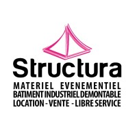
- 2022 - 2023 : Association Femme du Monde (31): Soutiens aux élèves de collèges.
- Pendant une année au sein d'une association, j'ai fourni un soutien scolaire à des collégiens, les aidant dans leurs devoirs, exercices, leçons et projets. Les séances incluaient également des accompagnements spécifiques pour renforcer leurs compétences dans certaines matières. Cette expérience a largement contribué à développer mes qualités de pédagogue. J'ai adapté mes méthodes aux besoins de chacun, et renforcé mes compétences de communication et de patience.
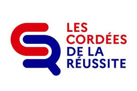
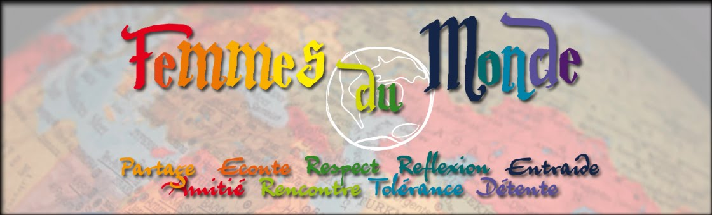
Compétences
- Humaines :
- Travail en équipe : Le Basket m'a permis de développer un esprit d'équipe. Il met l'accent sur la communication, la collaboration et la confiance. "Seul, on va plus vite. Ensemble, on va plus loin"
- Rigoureux : Je suis précis, méthodique et attentif aux details dans les différentes tâches que j'effectue.
- Autonome : Je suis capable de travailler sans aide, j'aime chercher par moi-même lorsqu'un obstacle s'oppose à moi.
- Curieux : Je m'intéresse à des sujets très variés comme la finance, la pâtisserie ou encore le sport.
- Techniques : (Le pourcentage des compétences est calculé par rapport au niveau attendu en BUT)
- Réseaux
- Architecture réseau 80%
- Correspond à structure et à la conception d'un réseau informatique. Elle décrit la disposition physique et logique des composants du réseau et la façon dont ils interagissent entre eux.
- Fonctionnement réseau 90%
- Lorsqu'un utilisateur envoie une demande (par exemple, visiter un site web), les données sont encapsulées en paquets qui traversent les couches du modèle OSI/TCP-IP, transmises via le réseau physique, dirigées par des routeurs et commutateurs, et décryptées par le dispositif de destination, qui envoie une réponse de manière similaire.
- Matériel réseau 98%
- Matériels informatiques principalement Cisco : switchs, router et AP-Wifi. Ainsi que téléphone IP.
- Programmation
- Python 80%
- Python est un langage de programmation populaire et polyvalent.
- HTML / CSS 90%
- Ceux sont les langages de base pour la création de pages web. HTML est utilisé pour structurer le contenu d'une page web. CSS est utilisé pour styliser le contenu HTML.
- Bash 70%
- Le shell Unix le plus couramment utilisé pour les scripts et les tâches en ligne de commande.
- PHP 80%
- C'est un langage de script côté serveur couramment utilisé pour le développement web.
- JS 80%
- C'est un langage de programmation côté client largement utilisé pour rendre les pages web interactives.
- SQL 65%
- C'est un langage de programmation utilisé pour gérer et manipuler des bases de données relationnelles.
- Java 100%
- C'est un langage de programmation orienté objet utilisé pour le développement d'applications.
- Administration systeme
- Linux 90%
- Linux est un système d'exploitation open-source basé sur le noyau Linux.
- Windows 80%
- Windows est un système d'exploitation (OS) développé par Microsoft.
- Active Directory 90%
- Active Directory (AD) est un service d'annuaire développé par Microsoft qui fait partie de son écosystème Windows Server. Il permet aux administrateurs informatiques de gérer et d'organiser les ressources réseau, telles que les utilisateurs, les groupes, les ordinateurs et les imprimantes, au sein d'un environnement Windows.
- Machine virtuelle et conteneur 70%
- Les machines virtuelles (VMs) et les conteneurs sont deux technologies de virtualisation utilisées pour créer et gérer des environnements informatiques isolés. Les machines virtuelles émulent le matériel pour exécuter plusieurs systèmes d'exploitation sur une seule machine. Chaque VM contient un OS invité complet. Les conteneurs isolent les applications les unes des autres sur un seul OS hôte en partageant son noyau.
- Téléphonie
- Mise en place d'un serveur d'appel 95%
- C'est une infrastructure logicielle ou matérielle conçue pour gérer et router les appels téléphoniques dans un environnement de télécommunications.
- Configuration de téléphones (IP ; Softphone ; DECT) 95%
- La configuration d'un téléphone IP implique la connexion physique au réseau, l'accès au menu de configuration, la configuration des paramètres réseau et VoIP, la personnalisation des paramètres téléphoniques et la vérification des fonctionnalités.
- Sécurité :
- Pentesting 70%
- Le pentesting est une méthode de test de sécurité des systèmes informatiques. Il consiste à simuler une attaque sur un système pour identifier les failles de sécurité et les corriger.
- DNSSEC 80%
- DNSSEC est une extension du protocole DNS qui permet de sécuriser les échanges de données entre les serveurs DNS et les utilisateurs finaux.
- Langues :
-
Anglais B2 : Séjour linguistique scolaire à New
York avec mission à l'ONU (GCMUN).
Logo de la mission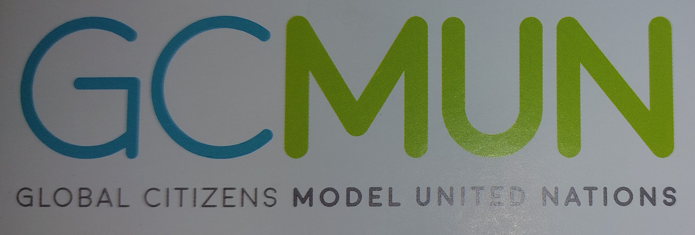
- Espagnol : A2
-
Travail réalisé :
Nous avons commencé par
l'élaboration de la solution en analysant les
besoins spécifiques de l'entreprise fictive. Cela comprenait
l'identification des services requis, tels que l'accès à Internet
pour les postes clients, la centralisation des services réseau sur
un serveur, et la sécurité des communications internes et
externes.
Ensuite, nous avons proposé une architecture réseau détaillée, incluant l'utilisation d'un switch, des VLAN pour segmenter le réseau selon les différents services, un routeur pour gérer la connectivité externe, et un point d'accès WiFi. Nous avons également intégré un serveur Windows avec Active Directory pour la gestion des utilisateurs et des ressources, un serveur Linux pour d'autres services réseau, et un serveur téléphonique pour la communication interne. - Résultat : Le projet intégratif a permis de développer des compétences essentielles en conception et gestion de réseaux. Nous avons réussi à mettre en place une infrastructure réseau fonctionnelle et sécurisée, répondant aux besoins de l'entreprise fictive. Ce projet a renforcé notre capacité à travailler en équipe, à résoudre des problèmes techniques et à appliquer nos connaissances théoriques dans un contexte pratique.
- Travail réalisé : J'ai récemment créé mon propre site web portfolio en utilisant HTML pour structurer le contenu et CSS pour améliorer l'aspect visuel. Cette réalisation démontre mes compétences techniques et présente de manière professionnelle mes expériences. La combinaison de ces langages offre une navigation optimale et une personnalisation esthétique.
- Pendant ma dernière année de lycée en section européenne anglais, j'ai eu la chance de participer à une mission de l'Organisation des Nations unies (ONU) où notre lycée représentait différents pays sur divers sujets.
- Mon rôle consistait à représenter l'Italie dans une mission axée sur la "Food and Agriculture Organization". La mission était plus qu'une simple simulation, car elle impliquait une représentation authentique devant l'ensemble de l'assemblée. En tant que délégué de l'Italie, ma responsabilité était de présenter la position de mon pays sur les questions relatives à l'alimentation et à l'agriculture, en tenant compte des enjeux mondiaux et des objectifs de l'organisation.
- Pratique du Basket en club de 2013 à 2023, Fenouillet Basket Club (31).
- Au fil de ces années, le basket m'a apporté bien plus que des paniers marqués. Il m'a inculqué des leçons de vie. L'esprit d'équipe m'a appris l'importance de la collaboration et de la communication. Les séances d'entraînement et les matchs ont forgé ma discipline personnelle et ma persévérance. Ce sport dynamique m'a également offert une pause du quotidien, une façon de libérer le stress et de me concentrer sur l'instant présent.
- Participation au championnat de France d'Aviron indoor UNSS en 2020 (75).
- Les compétitions sportives offrent une occasion unique d'acquérir de l'expérience. La compétition à un niveau national exige un haut niveau de préparation physique et mentale. Participer à un championnat de cette envergure m'a poussé à dépasser mes limites, ainsi qu'à trouver une source de motivation pour améliorer mes performances et atteindre de nouveaux objectifs sportifs.
- Intérêt pour les nouvelles technologies.
- Je suis passionné par les nouvelles technologies en raison de l'impact qu'elles ont sur notre vie quotidienne et sur le monde qui nous entoure. Observer l'évolution rapide de la technologie me fascine, car cela ouvre la porte à d'infinies possibilités d'innovation et de progrès. En tant que curieux de nature, j'aime explorer des concepts novateurs, découvrir de nouvelles idées et comprendre les mécanismes sous-jacents des technologies émergentes. C'est un domaine qui continue de m'inspirer et de me motiver à explorer les frontières toujours changeantes de la technologie moderne.
Projets
Projet Intégratif
Contexte : Ce projet a été réalisé dans le cadre de ma première année en BUT Réseaux et Télécommunications. Il s'agit d'une activité en équipe de 5 où nous avons conçu un réseau d'entreprise pour une PME fictive en 2 semaines.
L'objectif principal de ce projet est de concevoir un réseau d'entreprise complet, en tenant compte des besoins et des contraintes de l'entreprise. Nous avons analyser les besoins de l'entreprise, proposer une solution adaptée et mis en place les équipements nécessaires pour assurer le bon fonctionnement du réseau. L'infrastructure réseau inclue des postes clients, des serveurs, des services réseau variés, et s'assurer de la sécurité et du bon fonctionnement de ces services.
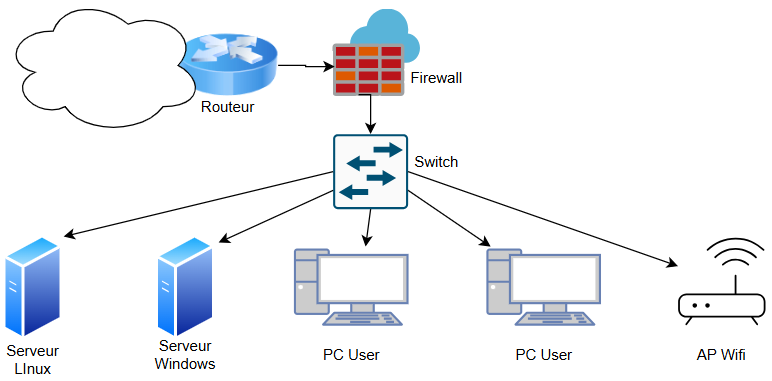
Portfolio
Contexte : Ce projet a été réalisé dans le cadre de mon cursus en BUT . Il s'agit d'une activité individuelle où j'ai conçu un site web portfolio pour présenter mes compétences et expériences professionnelles .
L'objectif principal de ce projet était de créer un site web portfolio en utilisant les langages HTML et CSS. Ce projet visait à démontrer mes compétences techniques en développement web et à présenter de manière professionnelle mes expériences et compétences. >
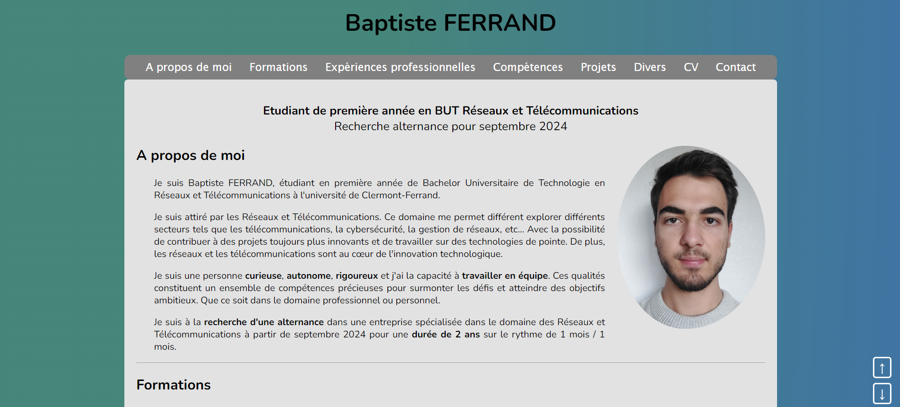
HTML (HyperText Markup Language) m'a servi à structurer de manière logique et ordonnée le contenu de mon site. Grâce à des balises soigneusement sélectionnées, j'ai pu définir des éléments tels que les titres, les paragraphes, les listes, et même intégrer des images de manière à rendre l'information claire et facilement accessible.
En parallèle, le langage CSS (Cascading Style Sheets) est intervenu pour offrir une dimension esthétique à mon portfolio. Cet outil puissant a permis de personnaliser l'apparence visuelle de chaque élément sur mes pages. Du dimensionnement de la page à la modification des propriétés comme l'arrière-plan et les tailles de police, CSS m'a donné le contrôle complet sur la présentation de mon site. Il a également joué un rôle essentiel dans le choix de la mise en forme, contribuant ainsi à créer une expérience utilisateur harmonieuse et attrayante.
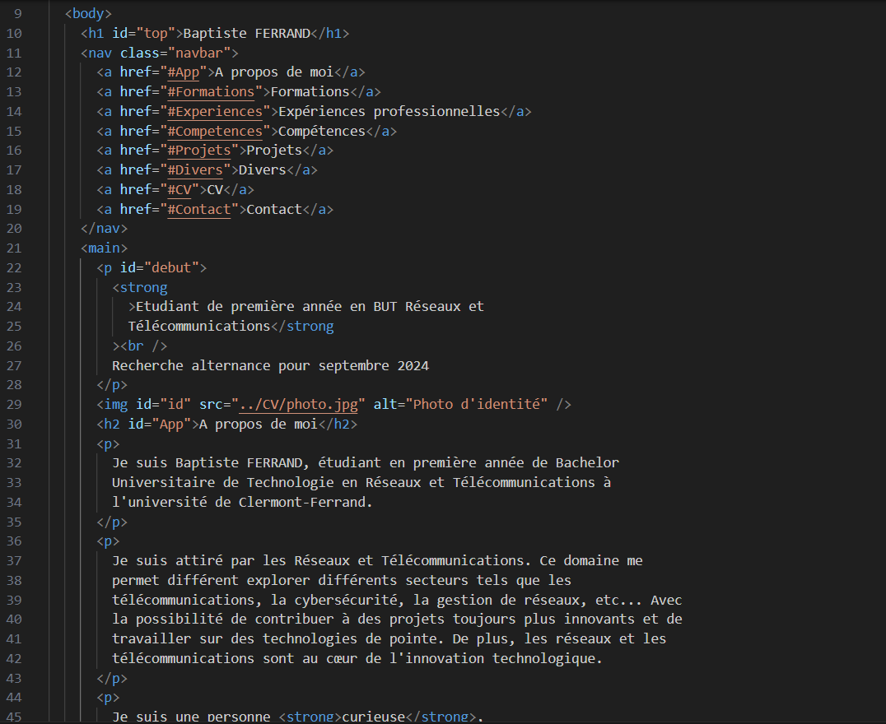
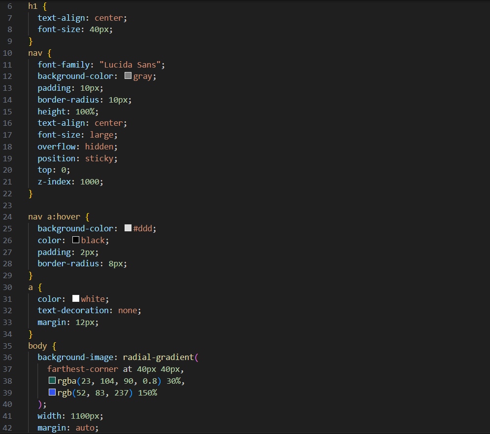
Résultat : L'utilisation des languages HTML et CSS m'a permis de donner vie à mon portfolio en ligne, en garantissant une structure solide et une esthétique soignée. Ce projet m'a non seulement offert l'opportunité de mettre en avant mes compétences en développement web, mais a également renforcé ma compréhension des langages fondamentaux du web.
GCMUN, mission a l'onu
Contexte : Projet dans le cadre de ma dernière année de lycée, où j'ai eu l'opportunité de participer à une simulation de l'Organisation des Nations unies. Cette expérience impliquait la représentation de différents pays sur des questions internationales, et elle était organisée à la fois en tant que travail individuel et en équipe lors de la session.
L'objectif principal de cette mission était de simuler le processus décisionnel de l'ONU et d'approfondir mes connaissances de la langue. Pour ma part sur des sujets concernant l'alimentation et l'agriculture, avec chaque élève représentant un pays spécifique. Mon rôle consistait à représenter l'Italie au sein de la "Food and Agriculture Organization". L'objectif était de présenter la position officielle de mon pays sur ces questions, en tenant compte des enjeux mondiaux et des objectifs de l'organisation.
Travail réalisé : Dans le cadre de cette expérience, j'ai débuté en rédigeant un "position paper" qui exprimait la position officielle de mon pays sur le sujet de discussion. Il a servi de base pour présenter les opinions, les objectifs et les propositions de mon pays lors des débats à venir. Ce processus a nécessité une compréhension approfondie des enjeux internationaux, ainsi que la capacité de formuler des idées de manière claire et persuasive. Après l'avoir soigneusement préparé, le document a été envoyé à l'ONU pour évaluation. L'ONU a ensuite élu le meilleur "position paper" parmi les participants, ce qui a ajouté un élément compétitif à l'expérience.
Lors de la session, j'ai participé à des débats avec d'autres représentants de différents pays en vue d'établir des lois favorables à notre nation. Pour y parvenir, des concessions ont été nécessaires afin de rallier d'autres pays à notre cause et d'obtenir leur soutien lors du vote final.
Résultat : Cette expérience a souligné l'importance de la diplomatie, de la communication et de la recherche de solutions équitables dans un contexte international. Elle a également renforcé ma compréhension de la complexité des relations internationales et de la nécessité de coopérer pour parvenir à des accords bénéfiques pour l'ensemble de la communauté mondiale.
Divers
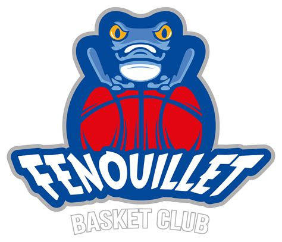
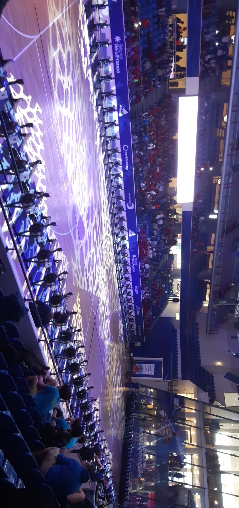
Curriculum Vitae
Télécharger le document
Contact
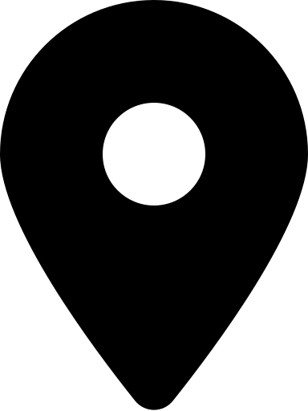
 Baptiste.FERRAND@etu.uca.fr
Baptiste.FERRAND@etu.uca.fr
 07.87.28.45.08
07.87.28.45.08